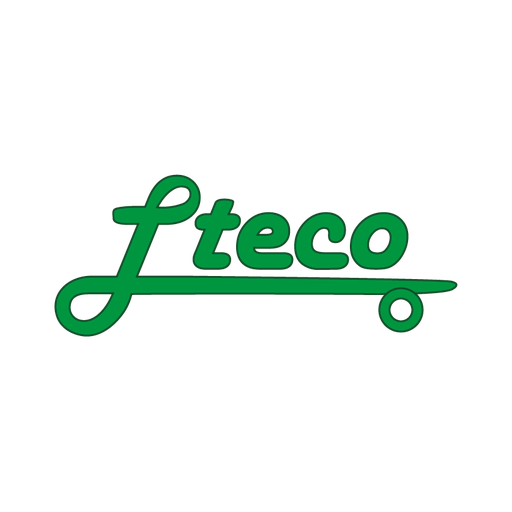
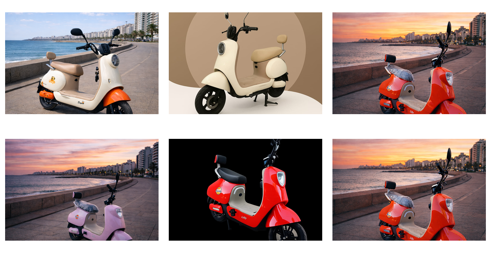

Proyecto independiente para la administracion operativa y comercial de LTeco ERP System.
LTeco ERP System es un emprendimiento orientado a la comercializacion y gestion de motos electricas urbanas. El sistema desarrollado centraliza la operacion diaria mediante un panel interno, una web publica de catalogo, trazabilidad comercial, control de stock y herramientas de postventa.
El objetivo principal del proyecto es profesionalizar la administracion del negocio, ordenar la informacion de vehiculos y repuestos, controlar ventas, gastos e importaciones, y sostener una presencia web coherente con la identidad comercial de la empresa.
La plataforma permite trabajar con roles diferenciados, registrar auditoria de operaciones relevantes, generar comprobantes verificables, administrar stock propio y de distribuidores, y mantener historial tecnico de servicios y garantias.
El sistema cubre la operacion comercial principal de LTeco ERP System. No se limita a un catalogo web, sino que integra gestion interna, seguimiento financiero, control de clientes, ventas y trazabilidad tecnica.
La verificacion publica de comprobantes permanece como funcionalidad publica con token HMAC, aunque queda pendiente evaluar su separacion futura en un endpoint aislado. Las rutas legacy de etiquetas QR tambien quedan pendientes de revision antes de moverlas o eliminarlas.
El proyecto esta organizado en tres areas principales: panel interno, web publica y codigo compartido. Esta separacion permite mantener aisladas las herramientas operativas de las pantallas publicas y reutilizar configuracion o reglas de dominio sin duplicacion innecesaria.
| Area | Ruta | Funcion |
|---|---|---|
| Panel interno | lteco-panel/ | Gestion operativa con sesion, permisos y acciones administrativas. |
| Web publica | public-web/ | Catalogo, contacto y verificacion publica de comprobantes. |
| Codigo compartido | shared/ | Configuracion, conexion, reglas de vehiculos y token de comprobantes. |
| Base de datos | database/migrations/ | Migraciones SQL incrementales. |
| Infraestructura | docker/ | Configuracion Apache y servicios Docker. |
El scanner QR interno fue consolidado dentro del panel en lteco-panel/vehiculos/scan.php. Los endpoints publicos antiguos de scanner fueron eliminados de public-web, y el lector html5-qrcode queda solamente como dependencia del panel.
El flujo de trabajo del negocio parte de la carga de productos e importaciones, continua con publicacion o gestion de stock, y finaliza en venta, comprobante, garantia y seguimiento postventa.
| Modulo | Descripcion |
|---|---|
| Dashboard | Resumen ejecutivo de ventas, stock y metricas principales. |
| Busqueda | Buscador global para vehiculos, clientes y ventas. |
| Vehiculos | Alta, edicion, imagenes, QR interno, importacion, precios, publicacion web y estados. |
| Repuestos | Catalogo, stock, precios y visibilidad operativa. |
| Clientes | Datos comerciales, fiscales y de contacto. |
| Ventas | Nueva venta, detalle, anulacion, comprobantes, WhatsApp y exportacion. |
| Postventa | Garantias, services, historial tecnico, observaciones y repuestos usados. |
| Gastos y balance | Registro de egresos y resumen financiero. |
| Importaciones | Numero de importacion y tipo de cambio asociado a stock. |
| Distribuidores | Stock asignado, pedidos, ventas, comisiones y estado de cuenta. |
| Usuarios | Roles, claves, activacion, MFA y permisos. |
| Auditoria | Trazabilidad de operaciones relevantes del sistema. |
El sistema utiliza roles para separar responsabilidades operativas y limitar accesos segun el tipo de usuario.
La sesion se controla por inactividad, regeneracion de ID y cookies seguras. Los formularios sensibles usan CSRF y el login puede incorporar Turnstile y MFA.
La venta interna registra cliente, productos, cantidades, moneda, metodo de pago, descuento, recargo, monto pagado, saldo y estado. Para motos, el sistema vincula el vehiculo vendido y habilita procesos de garantia y servicios.
Los comprobantes se generan desde el panel y contienen un QR o enlace de verificacion. La validez se calcula mediante token HMAC, usando datos estables de la venta y el secreto LTECO_COMPROBANTE_SECRET.
La generacion de numero, token y URL de verificacion fue centralizada en shared/comprobante_verificacion.php. Esto evita diferencias entre el comprobante emitido desde el panel y la verificacion publica.
public-web/verificar-comprobante.php, usa headers noindex/no-store, token HMAC y rate limit local configurable.La web publica muestra vehiculos publicados desde el panel. Toma datos de productos y vehiculos, respeta orden, destacado y estado, y permite derivar consultas a WhatsApp o formulario de contacto.
index.php: home publica.catalogo.php: listado de vehiculos publicados.detalle.php: ficha publica del modelo.contacto.php: consulta comercial.verificar-comprobante.php: verificacion publica de comprobantes.
El sistema incorpora controles de acceso y trazabilidad sobre las operaciones principales. La seguridad esta implementada en capas: configuracion HTTP, sesion, permisos por rol, CSRF, validacion de login, MFA y auditoria.
| Control | Implementacion |
|---|---|
| Sesiones | Cookies seguras, expiracion por inactividad y regeneracion periodica. |
| Login | Hash de contrasena, bloqueo por intentos, auditoria y Turnstile opcional. |
| MFA | Disponible para perfiles administrativos. |
| CSRF | Validacion en formularios sensibles. |
| Auditoria | Registro de usuario, rol, accion, modulo, detalle, IP, user agent y fecha. |
| Headers | CSP, HSTS cuando corresponde, X-Frame-Options, Referrer-Policy y Permissions-Policy. |
El proyecto cuenta con despliegue Docker para panel y web publica, configuracion Apache separada y variables de entorno centralizadas. El archivo .env no debe versionarse y .env.example funciona como contrato de configuracion.
panel: servicio Apache/PHP para lteco-panel.web: servicio Apache/PHP para public-web.host.docker.internal en entorno local.El sistema incluye script backup_db.sh y modulo de mantenimiento desde panel. Los backups y logs locales deben permanecer fuera del repositorio versionado.
El sistema se encuentra ordenado por capas principales y con limpieza reciente de archivos obsoletos, dependencias duplicadas y backups locales versionados por error.
html5-qrcode mantenida solo en assets del panel.shared.docs.vehiculos/etiqueta.php y vehiculos/etiqueta_doble.php como redirecciones.DOCUMENTACION_OFICIAL_SISTEMA.md, MANUAL_DE_USUARIO.md, ORDENAMIENTO_ARCHIVOS.md y PENDIENTES.md.